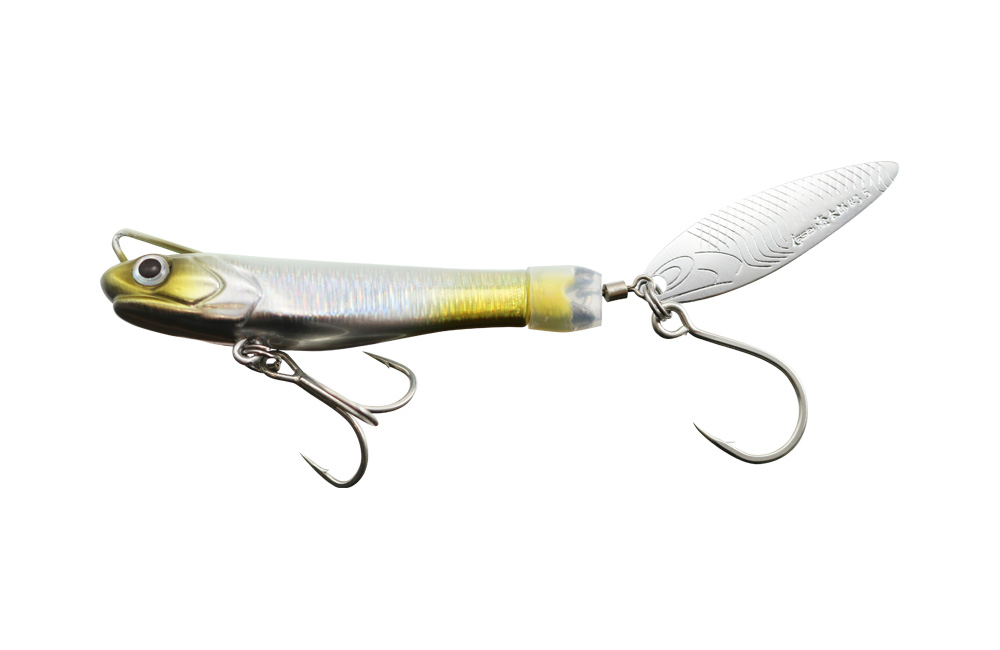
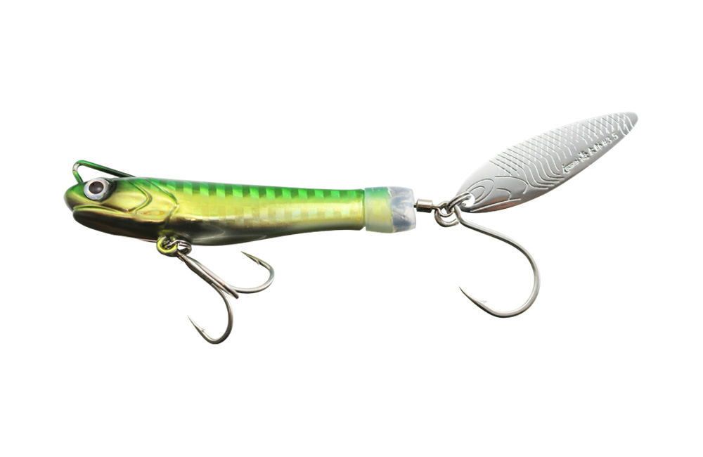
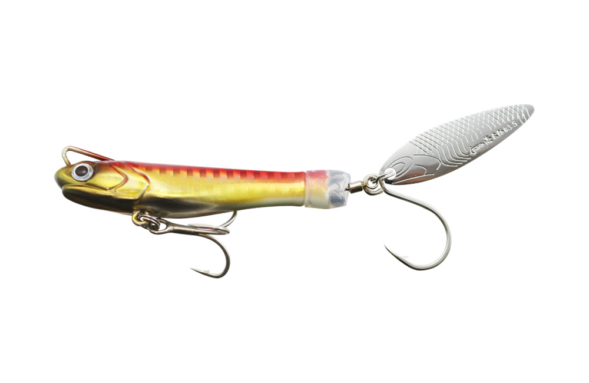
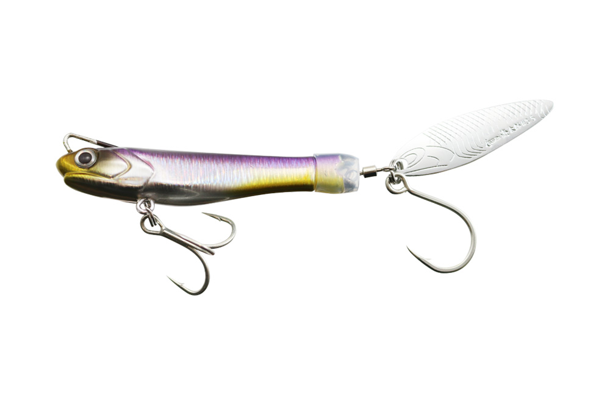

サカナサカナスピン
サカナサカナスピンは海太郎（issei）のテールスピンジグです。
カタクチイワシをデザインベースにしたボディのリアに、海太郎オリジナルの「カタクチブレード」を搭載。キャストして巻くだけで、ボディが水を押す波動とブレードのフラッシングのダブルで広い範囲にアピールします。

画像出典:issei公式HP
スペック
- メーカー
- 海太郎（issei）
- タイプ
- テールスピンジグ
- 重さ
- 20g／30g／40g
- ブレード
- #3（20g・30g）／#3.5（40g）
- フック
- トリプル#10・シングル#4（20g）／トリプル#8・シングル#4（30g）／トリプル#6・シングル#2（40g）
- ターゲット
- シーバス・青物・サゴシ・サワラ・アジ・メッキ・タチウオ・マダイなど
- 価格
- 790円／830円／870円（税別）
▼今すぐチェック

サカナサカナスピンの特徴
巻くだけで、波動とフラッシングのダブルアピール
-
カタクチイワシがモチーフのボディ
ボディはカタクチイワシをデザインベースにした形状。低重心のワイドボディは圧倒的な飛距離を生むだけでなく、キャスト時にフックがリーダーへ絡むトラブルも減らしてくれます。
-
オリジナルの「カタクチブレード」
ブレードには、細身のウィローリーフ形状をした海太郎オリジナルの「カタクチブレード」を採用。巻くだけでよく回り、フラッシングで遠くの魚にも気づかせます。
-
長穴異形のラインアイで安定姿勢
水中で安定した姿勢を保つために、ラインアイは長穴の異形タイプ。早巻きでもバランスを崩しにくく、ただ巻きで安定して引いてこられます。
サカナサカナスピンの使い方
基本はキャストして狙いのレンジまで沈め、ただ巻きするだけ。ボディの水押しとブレードの回転が勝手にアピールしてくれます。
表層から探るなら着水直後から巻き始め、反応がなければカウントダウンでレンジを下げていきましょう。リフト＆フォールを混ぜると、フォール中のバイトも拾えます。
サカナサカナスピンの得意な状況
ショアからのシーバスや小型〜中型の青物、サゴシ・サワラ狙いのメインルアーとして。魚の活性やいる場所を探るサーチルアーにも最適で、オフショアのブレードゲームでもローテーションの1本になります。
ワンポイント
20gはライトなタックルでのシーバスやメッキ、30gはショアの青物・サゴシの基準、40gは遠投や潮の速い場所に、と重さで使い分けるのがおすすめです。
重さの使い分け
| 重さ | ブレード／フック | 使いどころ |
|---|---|---|
| 20g | #3／トリプル#10 | シーバスやメッキ、アジなど。ライトなタックルで投げたいときに |
| 30g | #3／トリプル#8 | ショアからの青物・サゴシ狙いの基準 |
| 40g | #3.5／トリプル#6 | 遠投したいときや、潮が速く深い場所に |
重さが上がるほどブレードとフックも大きくなります。使っているロッドの適合ルアー重量に合わせて選びましょう。
人気カラー
全9色のラインナップから4色を紹介します（カラー名は公式の表記のまま）。

#001 グローシラスシラスをイメージしたグローカラー。朝夕のマヅメや夜、シラスなどの小さいベイトのときに。

#004 グリーンゴールド緑の背中にゴールドのボディ。朝マヅメや濁りが入った日の定番。

#026 アカキングロー赤金にグローを組み合わせたカラー。濁り潮やローライトでのアピールに。

#037 カタクチイワシボディのモチーフそのままのリアルカラー。カタクチイワシがベイトの日中に。
画像出典:issei公式HP
サカナサカナスピンに似ているルアー
-
 ジャイアントキリング ボンバースピン
メジャークラフト
詳細はこちら＞
ジャイアントキリング ボンバースピン
メジャークラフト
詳細はこちら＞
20〜100gまでそろうスピンテールジグ。重めのウエイトで遠投したいときに。
-
 Zブレード
ジーク
詳細はこちら＞
Zブレード
ジーク
詳細はこちら＞
20〜80gのブレード付きジグ。サゴシ・サワラをメインに狙いたいときに。
-
 ジャックアイマキマキ
ハヤブサ
詳細はこちら＞
ジャックアイマキマキ
ハヤブサ
詳細はこちら＞
巻くだけで使えるブレード付きジグ。ショアの青物狙いで、もう少し重さが欲しいときに。